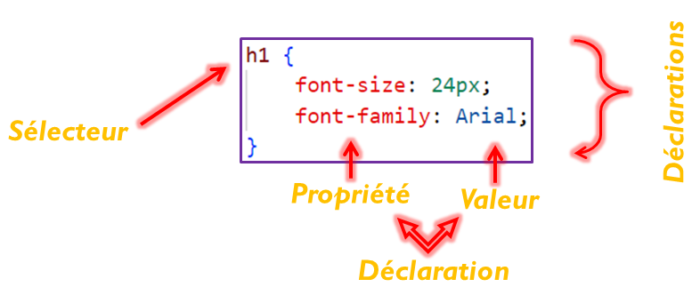

Le concept de feuilles de style existait déjà dans les traitements de texte comme dans Word de Microsoft. Allez dans le menu Format de Word, vous y trouvez Style. les feuilles de style ne sont pas une composante directe du Html mais un développement à part dans la publication de pages Web.
Une règle de style en CSS est une déclaration qui spécifie le style visuel d'un ou plusieurs éléments HTML ciblés. Une règle de style CSS se compose de deux parties principales : le sélecteur et les déclarations.
